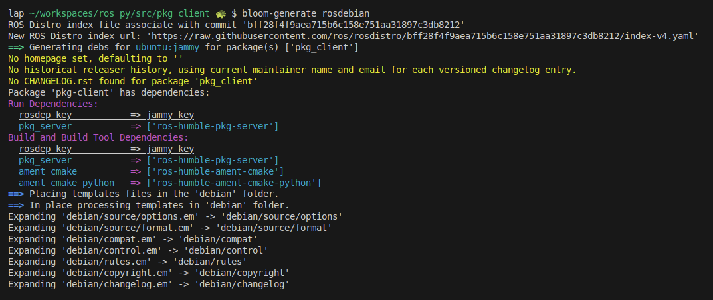
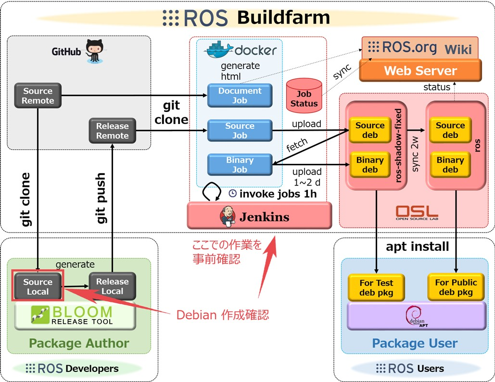

Package.xml, Rosdep, Bloom and other tools
Package.xml
It provides metadata about the package, such as its name, version, dependencies, and other important information.
check REP 149 for more details here
Dependencies
- depend: Specifies dependencies required to build and run the package. A
tag is equivalent to specifying , and , all on the same package or key. The tag cannot be used in combination with any of the three equivalent tags for the same package or key name. - build_depend: Specifies dependencies required to build the package (e.g., libraries needed at build time).
- exec_depend: Specifies runtime dependencies (e.g., libraries or tools needed when running the package).
- test_depend: Specifies dependencies needed for running tests. doc_depend: Specifies dependencies related to documentation.
- buildtool_depend: Specifies build tools required for the package.
Rosdep
rosdep is a command-line tool for installing system dependencies more
| install | |
|---|---|
commands
- init: Download/update rosdep sources to/etc/ros/rosdep/sources.list.d/20-default.list
- update: Download databases from the above sources and store them in ~/.ros/rosdep
rosdep install
| install | |
|---|---|
rosdep check
check if the dependencies of package(s) have been met.
| check | |
|---|---|
rosdep keys
list the rosdep keys that the packages depend on.
rosdep resolve python3-rosdep
resolve <rosdeps> to system dependencies
Note
for example bluez-hcidump not defined for ubuntu is
rosdep db
generate the dependency database and print it to the console.
rosdep update
update the local rosdep database based on the rosdep sources.
Custom rosdep yaml file
The yaml schema define in REP-111
Note
The rosdistro repository contains the package information for ROS distributions. found in git https://github.com/ros/rosdistro/tree/master
Note
yaml
ROSDEP_NAME:
OS_NAME1:
PACKAGE_MANAGER1:
PACKAGE_ARGUMENTS_A
OS_NAME2:
PACKAGE_MANAGER2:
PACKAGE_ARGUMENTS_A
- package_manager: apt, pip
- os_name: ubuntu, debian
yaml
adafruit-pca9685-pip:
ubuntu:
pip:
packages: [adafruit-pca9685]
Demo: Create custom rosdep yaml file
- Create yaml file named
custom_rosdep.yaml - Update rosdep sources
- Run rosdep update
- Check with rosdep resolve
| custom_rosdeps.yaml | |
|---|---|
Update
Resolve
Bloom
A tool for helping release software into git-buildpackage repositories. more
| install | |
|---|---|

- Add custom_rosdep.yaml to workspace
- Update rosdep sources
- Run rosdep update
| 30-custom.list | |
|---|---|

| build deb | |
|---|---|
Check deb package
Tools
Note
git-buildpackage is a tool that helps you build Debian packages from a git repository. more
References
Todo: learn more
